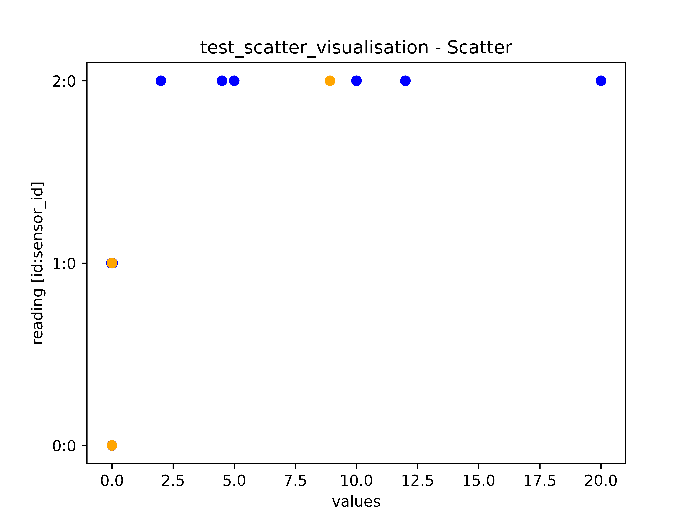

Examples
Note
There are further detailed examples in the test folder.
In gerneral there is a seperate test file for each submodule.
Installation/Usage
As the package has not been published on PyPi yet, it CANNOT be install using pip.
Installation DEV
For now, the suggested method is to copy the MagneticReadoutProcessing folder into your Python project folder.
There are some other packages required which are listed in the requirements.txt.
To install them use $ pip3 install -r requirements.txt command.
$ git clone https://github.com/LFB-MRI/MagneticReadoutProcessing ./MagneticReadoutProcessing
$ cd ./MagneticReadoutProcessing
$ pip3 install -r requirements.txt
# COPY LIB TO YOUR PROJECT
$ cp -R ./MagneticReadoutProcessing ~/yourPythonProject/
Installation PROD
The other method is to use the setup.py to install MagneticReadoutProcessing as module:
$ git clone https://github.com/LFB-MRI/MagneticReadoutProcessing ./MagneticReadoutProcessing
$ cd ./MagneticReadoutProcessing
$ python ./setup.py install
MRPReading Examples
Create a minimal measurement
import MRPConfig
import MRPReading
import numpy as np
from tqdm import tqdm
import math
# CREATE A CONFIG INSTANCE
# HERE SOME PARAMETERS ABOUT THE READING AND MEASUREMENTS ARE STORED
# ITS POSSIBLE TO LOAD THESE VALUES USING A INI FILE
# PLEASE NOTICE THE MRPConfig MEMBERS
Config = MRPConfig.MRPConfig()
# SETUP SOME DETAILS ABOUT THE MEASUREMENT
# WE WANT TO CREATE A HALF-SPHERE SCAN
Config.MEASUREMENT_HORIZONTAL_RESOLUTION = 36
Config.MEASUREMENT_VERTICAL_RESOLUTION = 18
Config.MEASUREMENT_HORIZONTAL_AXIS_DEGREE = 360
Config.MEASUREMENT_VERTICAL_AXIS_DEGREE = 180
# CREATE A READING INSTANCE TO STORE THE READ DATA IN
# HERE THE Config FROM ABOVE IS PASSED TO SET THE METADATA
reading = MRPReading.MRPReading(Config)
# CREATE A POLAR HALF SPHERE GRID TO ITERATE OVER
n_phi = Config.MEASUREMENT_HORIZONTAL_RESOLUTION
n_theta = Config.MEASUREMENT_VERTICAL_RESOLUTION
phi_radians = math.radians(Config.MEASUREMENT_HORIZONTAL_AXIS_DEGREE)
theta_radians = math.radians(Config.MEASUREMENT_VERTICAL_AXIS_DEGREE)
# CREATE A POLAR COORDINATE GRID TO ITERATE OVER
# HALF SPHERE
#theta, phi = np.mgrid[0.0:0.5 * np.pi:n_theta * 1j, 0.0:2.0 * np.pi:n_phi * 1j]
# FULL SPHERE
theta, phi = np.mgrid[0.0:np.pi:n_theta * 1j, 0.0:2.0 * np.pi:n_phi * 1j]
# FINALLY INSERT THE MEASUREMENT-DATA
reading_index_theta = 0
reading_index_phi = 0
# TQDM IS USED TO SHOW A PROGRESSBAR IN RUNNING SHELL
progressbar = tqdm(phi[0, :], desc ="Progress: ")
for j in progressbar:
reading_index_phi = reading_index_phi + 1
reading_index_theta = 0
for i in theta[:, 0]:
reading_index_theta = reading_index_theta + 1
# i = VERTICAL 0-90
# j = HORIZONTAL 0-360
horizontal_degree = math.degrees(j)
vertical_degree = math.degrees(i)
# READOUT THE SENSOR
value = 0.2 # mT
temp = 25.0 # DEGREE C
# SAVE RESULT
reading.insert_reading(value, j, i, reading_index_phi, reading_index_theta)
# UPDATE CONSOLE OUTPUT WITH THE CURRENT READOUT AND POSITION
progressbar.set_description("X:{0} X:{1} = {2}".format(horizontal_degree, vertical_degree, value))
progressbar.refresh()
Export a reading
# EXTENDS THE `Create a minimal measurement` EXAMPLE
import os
# EXPORT TO A DIFFERENT FOLDER
RESULT_FILEPATH = os.path.join(os.path.dirname(os.path.abspath(__file__)), "out/test")
if not os.path.exists(RESULT_FILEPATH):
os.makedirs(RESULT_FILEPATH)
# ADD SOME ADDITION META DATA
reading_storage.set_additional_data('filepath', RESULT_FILEPATH)
reading_storage.set_additional_data('description', 'a new nice reading')
# FINALLY EXPORT
reading.dump_to_file(RESULT_FILEPATH)
Import a reading
# EXTENDS THE `Export a reading` EXAMPLE
RESULT_FILEPATH = os.path.join(os.path.dirname(os.path.abspath(__file__)), "out/test.mag.json")
reading_imported = MRPReading.MRPReading(None)
reading_imported.load_from_file(RESULT_FILEPATH)
MRPVisualization Examples
Visualization of a polar measurement
{kind=link}
# EXTENDS THE `Create a minimal measurement` EXAMPLE
import MRPPolarVisualization
import os
# HERE matplotlib is also used
visu = MRPPolarVisualization.MRPPolarVisualization(reading)
# 2D PLOT INTO A WINDOW
visu.plot2d_top(None)
visu.plot2d_side(None)
# 3D PLOT TO FILE
visu.plot3d(os.path.join(os.path.dirname(os.path.abspath(__file__)), 'plot3d_3d.png'))
MRPAnalysis Examples
Sensor bias compensation
Note
Please see testcases in test_SensorAnalysis.py for further examples
Note
Attention: Make sure that the environment (objects around, temperature) does not change and the device is not moved.
import MRPAnalysis
# Create a empty reading with no settings. Only the raw values are needed, no metadata
reading = MRPReading.MRPReading()
# take a few measurements
for i in range(1000):
measurement = MRPReadingEntry.MRPReadingEntry()
# readout sensor or use dummy data and assign result
measurement.value = (random.random() -0.5) * 2
reading.insert_reading_instance(measurement, False)
time.sleep(1)
# OPTIONAL: plot deviation
import MRPDataVisualization
MRPDataVisualization.MRPDataVisualization.plot_error([reading])
# APPLY COMPENSATION
# Here the ``calculate_mean`` function is used
# see MRPAnalysis module for alternatives
reading_mean_value = MRPAnalysis.MRPAnalysis.calculate_mean(reading)
# we want to subtract the mean value from all readings
reading_mean_value = -reading_mean_value
# modify measurement values
MRPAnalysis.MRPAnalysis.apply_global_offset_inplace(reading, reading_mean_value)
The MRPDataVisualization.plot_error function plots the mean, std deviation and variance values for given readings.
These information are useful for furhter sensor calibration routines.
{kind=link}
Furthermore a simple scatter plot is implemented to plot the reading data on a 1d axis. The orange dor marks the mean value of the reading and the other ones are representing the deviation.
{kind=link}
Apply a calibration/reference reading
The idea behind the calibration routine is to perform a measurement without a magnetic source being placed in the sample holder.
The reading_calibration is performed with the same settings for all subsequent measurements.
Afterwards the Function apply_calibration_data_inplace is called for each new reading.
Note
Make sure that the sample size (HORIZONTAL_RESOLUTION and VERTICAL_RESOLUTION) for calibration and all further measurements match.
Note
Attention: Make sure that the environment does not change and the device is not moved.
import MRPAnalysis
# reading_calibration => measurement without magnetic source => environment only
# reading_A => reading with source placed
MRPAnalysis.MRPAnalysis.apply_calibration_data_inplace(reading_calibration, reading_A)
# THE CALIBRATION_READING IS APPLIED DIRECTLY TO READING_A
reading_A.set_additional_data('calibrated', 1)
reading.dump_to_file(RESULT_FILEPATH)
Merge two half sphere readings
{kind=link}
The current mechanical scanner can only scan one magnet side in one pass, so two scann passes are required to scan a full sphere.
The merge_two_half_sphere_measurements_to_full_sphere function combine two readings (top, bottom) into one.
Note
Make sure that the sample size (HORIZONTAL_RESOLUTION and VERTICAL_RESOLUTION) for calibration and all further measurements match.
import MRPAnalysis
# IMPORT TWO EXISTING READINGS FROM FILE
reading_top_filepath = os.path.join(os.path.dirname(os.path.abspath(__file__)), "assets/114N2.mag.json")
reading_bottom_filepath = os.path.join(os.path.dirname(os.path.abspath(__file__)), "assets/114S2.mag.json")
# IMPORT TOP READING
reading_top = MRPReading.MRPReading(None)
reading_top.load_from_file(reading_top_filepath)
# IMPORT BOTTOM READING
reading_bottom = MRPReading.MRPReading(None)
reading_bottom.load_from_file(reading_bottom_filepath)
# FINALLY MERGE
merged_reading = MRPAnalysis.MRPAnalysis.merge_two_half_sphere_measurements_to_full_sphere(reading_top, reading_bottom)
{kind=link}
MRPHal Examples
The MRPHal class provides functions to access several different Hall Magnetic Sensors using a unified Arduino based firmware for low costs hardware.
Note
Please see the hardware firmware folder /src/UnifiedMagBoardFirmware in order to setup the sensor hardware.
Always use the bundled (same release version / commit) firmware and library version in order to use all implemented features.
Note
Please see testcases in hwtest_MRPHal.py.py for further examples
Note
On Linux system please make sure the user is in the dialout group, to allow non root serial port access. $ sudo usermod -a -G dialout $USER
Connect a physical sensor
import MRPHal
# first we want to find all serial ports on the system
system_ports = MRPHal.list_serial_ports()
print(system_ports)
# connect to a found port
sensor = MRPHal.MRPHal(system_ports[0])
# use the serial connection of the connected sensor here:
# as device path MRPHalSerialPortInformation(/dev/ttyUSB0)
# using sockets MRPHalSerialPortInformation(socket://<host>:<port>)
## For more details refer to: https://pyserial.readthedocs.io/en/latest/url_handlers.html
sensor.connect()
Raw sensor interaction
Its possible to interface the sensor using raw commands like id, version, readout x 0.
These commands are implemented into the sensors firmware and allows debugging of the sensor.
# EXTENDS THE `Connect a physical sensor` EXAMPLE
# sends a cmd over sensors debug interface
ret = sensor.send_command("version")
print(ret)
Query Sensor capabilities
After a sensor connection is made, its possible to interact with the sensor. The next step is to get some information about the connected sensor. Due the hardware and firmware is capable to interface different sensors, we need to get basic information about the connected sensor.
# EXTENDS THE `Connect a physical sensor` EXAMPLE
cap = sensor.get_sensor_capabilities() # => e.g. [static]
id = sensor.get_sensor_id() # => 24ab42
sc = sensor.get_sensor_count() # => 2
Readout Value Readout
This readout example queries the sensor for a measurement.
In this example we are using a static sensor, so just one sensor.
Here the goal is get the value b in mT.
# EXTENDS THE `Query Sensor capabilities` EXAMPLE
# The MRPHal instance sensor is already connected to a hardware sensor
basesensor = MRPBaseSensor.MRPBaseSensor(sensor)
# query a complete readout of all connected sensors and their axis
basesensor.query_readout()
# readout default sensor
print(basesensor.get_b())
# readout the sensor with id 1
print(basesensor.get_b(1))
MRPSimulation Examples
The MRPSimulation class contains functions to generate sample data.
Here random MRPReading class instances can be generated.
Full sphere with polarization
{kind=link}
reading = MRPSimulation.MRPSimulation.generate_random_full_sphere_reading(_full_random=False)
visu = MRPPolarVisualization.MRPVisualization(reading)
visu.plot3d(None)
Fully random sphere
{kind=link}
reading = MRPSimulation.MRPSimulation.generate_random_full_sphere_reading(_full_random=True)
visu = MRPPolarVisualization.MRPVisualization(reading)
visu.plot3d(None)
Magpylib based sphere
His example shows, how to generate readings using the magpylib.
Here MRPReading class instances with datasets from a simulated cubic magnets can be generated.
The generate_cubic_reading functions uses magpy.magnet.Cuboid instance to generate a dataset.
The two additional parameters for the random factor make it possible to add a certain random deviation to the measured value.
{kind=link}
no_samples = 10
add_random_factor = True
add_random_polarisation = True
for sample in range(no_samples):
reading = MRPSimulation.MRPSimulation.generate_cubic_reading(MRPMagnetTypes.MagnetType.N45_CUBIC_15x15x15, add_random_factor, add_random_polarisation)
visu = MRPVisualization.MRPVisualization(reading)
visu.plot3d(None)
name = os.path.join(self.batch_generation_folder_path, 'test_simulation_cubic_magnet_' + str(magnet_size) + "mm_" + str(sample) + "_random")
visu.plot3d(name + ".mag.json.png")
reading.dump_to_file( name + ".mag.json")
MRPReadoutSource Examples
In this example category the main goal of this library is shown.
To use a reading and convert it to a magnet, which can be used as MagPyLib source.
Note
CURRENTLY IT IS ONLY POSSIBLE TO USE FULL SPHERE READING!!
Note
Please see all step by step examples located in test_MRPReadoutSource.py
# GENERATE A SAMPLE READING USING A SIMULATED 12x12x12 CUBIC MAGNET
magnet_size = 12 # mm
generated_reading = MRPSimulation.MRPSimulation.generate_cubic_reading(magnet_size)
# CREATE CUSTOM READOUT SOURCE INSTANCE
gen_magnet = MRPReadoutSource.MRPReadoutSource(generated_reading)
# PLACE SENSOR PROBE
gen_sensor = magpy.Sensor(position=(50, 0, 0), style_label='S1')
# CREATE COLLECTIONS
gen_collection = magpy.Collection(gen_magnet, gen_sensor,style_label='gen_collection')
# READOUT SENSOR
gen_value = gen_sensor.getB(gen_magnet)
gen_mag_value = np.sqrt(gen_value.dot(gen_value)) # [mT]
Hallbach-Array Examples
Generate OpenSCAD out of magpylib.magnet OBJECTS
This example shows how to generate a Hallbach-OpenSCAD model out of a given set of magpylib.magnet instances.
The generate_1k_hallbach_using_polarisation_direction function generates a hallbach array by modifying the .position, .rotation attributes of the magpylib.magnet instance.
It also calculates the the inner and outer cylinder dimensions.
Finally the generate_openscad_model function generated the OpenScad model out of the generated information stored in MRPHallbachArrayResult.
{kind=link}
from MagneticReadoutProcessing import MRPHallbachArrayGenerator, MRPMagnetTypes
# GENERATE EXAMPLE READINGS USING N45 CUBIC 15x15x15 MAGNETS
reading = MRPSimulation.MRPSimulation.generate_reading(MRPMagnetTypes.MagnetType.N45_CUBIC_15x15x15)
readings = []
for idx in range(8):
readings.append(reading)
# PLEASE NOTE len(readings) % 4 = 0 so 4,8,12,16,...
## RESULT TYPE IS MRPHallbachArrayResult WHICH CONTAINS A magpylib.magnet ARRAY
hallbach_array: MRPHallbachArrayGenerator.MRPHallbachArrayResult = MRPHallbachArrayGenerator.MRPHallbachArrayGenerator.generate_1k_hallbach_using_polarisation_direction(readings)
# EXPORT TO OPENSCAD
## USING MRPHallbachArrayResult AND USES THE magpylib.magnet.position, magpylib.magnet.orientation PROPERTIES TO GENERATE THE OPENSCAD MODEL
## 2D MODE DXF e.g. for lasercutting
MRPHallbachArrayGenerator.MRPHallbachArrayGenerator.generate_openscad_model([hallbach_array], "./2d_test.scad",_2d_object_code=True)
## 3D MODE e.g. for 3D printing
MRPHallbachArrayGenerator.MRPHallbachArrayGenerator.generate_openscad_model([hallbach_array], "./3d_test.scad",_2d_object_code=False)
Generate Hallbach-Streamplot out of magpylib.magnet OBJECTS
For verification of the generated hallbach array, it is possible to generate a streamplot of the generated magnets.
{kind=link}
from MagneticReadoutProcessing import MRPHallbachArrayGenerator, MRPMagnetTypes
# GENERATE EXAMPLE READINGS USING N45 CUBIC 15x15x15 MAGNETS
reading = MRPSimulation.MRPSimulation.generate_reading(MRPMagnetTypes.MagnetType.N45_CUBIC_15x15x15)
readings = []
for idx in range(2):
readings.append(reading)
## RESULT TYPE IS MRPHallbachArrayResult WHICH CONTAINS A magpylib.magnet ARRAY
hallbach_array: MRPHallbachArrayGenerator.MRPHallbachArrayResult = MRPHallbachArrayGenerator.MRPHallbachArrayGenerator.generate_1k_hallbach_using_polarisation_direction(readings)
# GENERATE STREAMPLOT
MRPHallbachArrayGenerator.MRPHallbachArrayGenerator.generate_magnet_streamplot([res_8], "./streamplot.png")
MISC Examples
Get meta-data
Each reading contains some meta-data about the reading.
To access these, there is a measurement_config dict present in the MRPReading class
# EXTENDS THE `Import a reading` EXAMPLE
# PRINT METADATA
print(reading_imported.measurement_config)
# ACCESS WITH
r = reading_imported.measurement_config['sensor_distance_radius']
Currently the following keys are present:
sensor_distance_radius- distance between hall-sensor - magnet inmm, can be used as radius for converting polar coordinates into cartesiansensor_id- which hall-sensor was used to collect samples
In addition there is another dict called additional_data with user defined data.
Export reading to numpy
For further and more advanced analysis the MRPReading class offers two functions in order to export the data member into a numpy.ndarray.
The current implementation returns
# EXTENDS THE `Create a minimal measurement` EXAMPLE
import numpy as np
# POLAR COORDINATES
# [[phi, theta, magnetic_value], ....]
numpy_1d_array = reading.to_numpy_polar(_normalize=False)
# CARTESIAN COORDINATES
# [[x, y, z], ....]
# THE CONVERSION TO CARTESIAN IS A BIT SPECIAL
# IT USES THE MAGNETIC_VALUE for the radius
# SO THE VECTOR IS LONGER IF THE MAGNETIC VALUE IS STRONGER
# THIS CONVERSION CAN BE USED WITH VECTOR CALCULATIONS LIKE FIND NEAREST POINT ....
# def to_numpy_cartesian(self, _normalize: bool = True, _use_sensor_distance: bool = False) -> np.array:
numpy_1d_array = reading.to_numpy_cartesian(_normalize=False, True)
np.shape(numpy_1d_array)